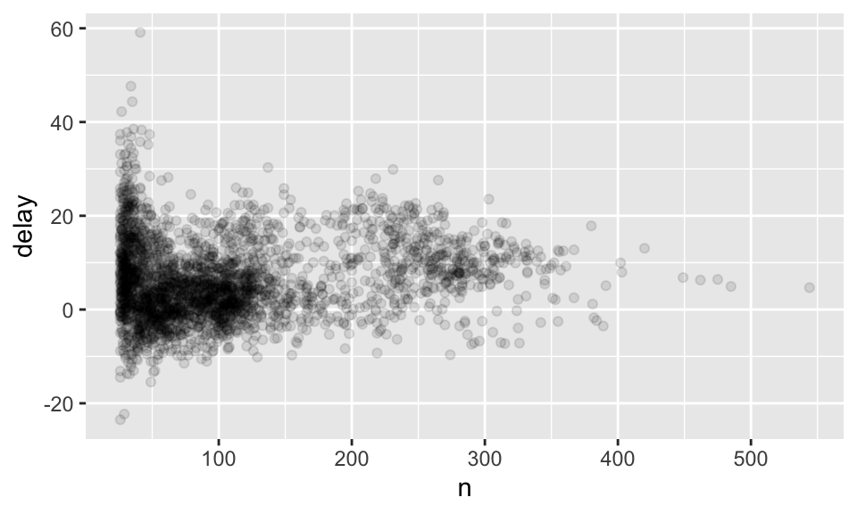

6.6 Grouped Summaries with summarize()
summarize() 會把整個表格整理成單一個 row。我們可以使用 summarize() 來計算全部航班的 dep_delay 的平均值：
summarize(flights, delay = mean(dep_delay, na.rm = TRUE))## # A tibble: 1 × 1
## delay
## <dbl>
## 1 12.6其中，使用 na.rm = TRUE 的原因在避免計算出一大堆 NA，見節 6.6.2。
但 summarize() 要搭配上 group_by() 才顯得更強大。如果我們想要知道每天的 dep_delay 的平均到底是多少與每天有多少個航班，我們可以使用 group_by()，將 flights 這個 dataset 依照 year、month、day 分組，然後指派給變數 by_day。接著，我們就可以使用 summarize()，並定義兩個新變數欄位為 delay 與 count，如：
by_day <- group_by(flights, year, month, day)
summarize(by_day, delay = mean(dep_delay, na.rm = TRUE), count = n())## `summarise()` has grouped output by 'year', 'month'. You can override using the `.groups` argument.## # A tibble: 365 × 5
## # Groups: year, month [12]
## year month day delay count
## <int> <int> <int> <dbl> <int>
## 1 2013 1 1 11.5 842
## 2 2013 1 2 13.9 943
## 3 2013 1 3 11.0 914
## 4 2013 1 4 8.95 915
## 5 2013 1 5 5.73 720
## 6 2013 1 6 7.15 832
## 7 2013 1 7 5.42 933
## 8 2013 1 8 2.55 899
## 9 2013 1 9 2.28 902
## 10 2013 1 10 2.84 932
## # … with 355 more rows6.6.1 以 Pipe 結合多重運算
如果我們想知道距離與每個地點的平均延誤的關係，我們可以：
使用
group_by，依據dest（終點）來分類flights。使用
summarize()製造一個新的 tibble，列出各個dest的次數（count）、平均距離（dist）與平均抵達延誤（delay）。使用
filter()，第一個引數放入剛剛新建的表格，然後移除 noise（出現次數小於 20 次者），並移除 “HNL” 這個終點站。
上面的步驟正如：
by_dest <- group_by(flights, dest)
delay <- summarize(by_dest, count = n(), dist = mean(distance, na.rm = TRUE),
delay = mean(arr_delay, na.rm = TRUE)) # 整理資料
delay <- filter(delay, count > 20, dest != "HNL") # 移除噪點
ggplot(data = delay, mapping = aes(x = dist, y = delay)) +
geom_point(aes(size = count), alpha = 1/3) +
geom_smooth(method = 'loess', formula = "y ~ x", se = FALSE) # 繪圖
但這種撰寫程式碼的方式稍嫌惱人，因為我們還要幫中間的 data frame 取名字。使用 pipe %>% 可以解決此問題：
delays <- flights %>%
group_by(dest) %>%
summarize(count = n(),
dist = mean(distance, na.rm = TRUE),
delay = mean(arr_delay, na.rm = TRUE)) %>%
filter(count > 20, dest != "HNL")%>% 可以讀成 “then”，即我們先使用 group_by 分組，然後使用 summarize() 計算次數與平均數，然後使用 filter() 過濾掉噪點與不想要的觀察值。這背後的邏輯就是 x %>% f(y) 即 f(x, y)，而 x %>% f(y) %>% g(z) 即 g(f(x, y), z)。
6.6.2 缺漏值
前開使用的 na.rm 引數的功能即決定要不要在計算前移除掉 NA。如果我們沒有設定 na.rm = TRUE，則我們將會製造出一大堆 NA，因為 NA 無論做什麼運算都會得到 NA，所以只要有其中一個觀察值的 dep_delay 為 NA，那一整天的平均就會是 NA，如：
flights %>%
group_by(year, month, day) %>%
summarize(mean = mean(dep_delay)) %>%
group_by(mean) %>%
summarize(count = n())## `summarise()` has grouped output by 'year', 'month'. You can override using the `.groups` argument.## # A tibble: 8 × 2
## mean count
## <dbl> <int>
## 1 0.145 1
## 2 0.241 1
## 3 1.61 1
## 4 3.53 1
## 5 6.06 1
## 6 7.78 1
## 7 7.93 1
## 8 NA 358我們可以發現製造了 358 個 NA！以下就不會產生上面的問題了：
flights %>%
group_by(year, month, day) %>%
summarize(mean = mean(dep_delay, na.rm = TRUE))在此，NA 代表航班取消；我們也可以先把 NA 的地方去除掉，如：
not_cancelled <- flights %>%
filter(!is.na(dep_delay), !is.na(arr_delay))
not_cancelled %>%
group_by(year, month, day) %>%
summarize(mean = mean(dep_delay))## `summarise()` has grouped output by 'year', 'month'. You can override using the `.groups` argument.## # A tibble: 365 × 4
## # Groups: year, month [12]
## year month day mean
## <int> <int> <int> <dbl>
## 1 2013 1 1 11.4
## 2 2013 1 2 13.7
## 3 2013 1 3 10.9
## 4 2013 1 4 8.97
## 5 2013 1 5 5.73
## 6 2013 1 6 7.15
## 7 2013 1 7 5.42
## 8 2013 1 8 2.56
## 9 2013 1 9 2.30
## 10 2013 1 10 2.84
## # … with 355 more rows6.6.3 計數
我們可以加入計數（n()）或非缺漏值的計數（sum(!is.na(x))），避免我們從很小的樣本得出結論。
delays <- not_cancelled %>%
group_by(tailnum) %>%
summarize(delay = mean(arr_delay))
ggplot(data = delays, mapping = aes(x = delay)) +
geom_freqpoly(binwidth = 10)
我們可以發現，有些航班甚至可以延遲超過 300 秒！但我們如果畫出散佈圖就會發現，如果只有少數幾個航班的日子，取平均以後其變異就會非常大，即樣本越大，變異越小（類似大數法則中，當樣本越來越大，估計參數會機率收斂到母體參數的概念），如：
delays <- not_cancelled %>%
group_by(tailnum) %>%
summarize(delay = mean(arr_delay, na.rm = TRUE),n=n())
ggplot(data = delays, mapping = aes(x = n, y = delay)) +
geom_point(alpha = 1/10)
所以我們其實可以移除掉樣本過小的日期，如：
delays %>%
filter(n > 25) %>%
ggplot(mapping = aes(x = n, y = delay)) + geom_point(alpha = 1/10)
我們接下來使用 Lahman 這個套件中的 Batting 這個 data frame 來討論棒球比賽中打擊者的表現與擊球次數的關係。
library(Lahman) # 載入 Lahman
batting <- as_tibble(Lahman::Batting) # 將 Batting 轉換成 tibble 型態
batters <- batting %>%
group_by(playerID) %>%
summarize(ba = sum(H, na.rm = TRUE) / sum(AB, na.rm = TRUE),
ab = sum(AB, na.rm = TRUE) )
# ba 為 batting average，即打擊率，衡量打擊的能力
# ab 為 at bat，即上場打擊的機會
batters %>%
filter(ab > 100) %>%
ggplot(mapping = aes(x = ab, y = ba)) + geom_point() +
geom_smooth(se = FALSE)## `geom_smooth()` using method = 'gam' and formula 'y ~ s(x, bs = "cs")'
我們可以發現，打擊次數越多的球員，打擊率也就越高，兩者有正向的關係；這可能是因為球隊會讓能打球的球員上場。
6.6.4 有用的歸納函數
- Measures of location:
mean(x),median(x).
not_cancelled %>%
group_by(year, month, day) %>%
summarize(
# average delay:
avg_delay1 = mean(arr_delay),
# average positive delay:
avg_delay2 = mean(arr_delay[arr_delay > 0])
)## `summarise()` has grouped output by 'year', 'month'. You can override using the `.groups` argument.## # A tibble: 365 × 5
## # Groups: year, month [12]
## year month day avg_delay1 avg_delay2
## <int> <int> <int> <dbl> <dbl>
## 1 2013 1 1 12.7 32.5
## 2 2013 1 2 12.7 32.0
## 3 2013 1 3 5.73 27.7
## 4 2013 1 4 -1.93 28.3
## 5 2013 1 5 -1.53 22.6
## 6 2013 1 6 4.24 24.4
## 7 2013 1 7 -4.95 27.8
## 8 2013 1 8 -3.23 20.8
## 9 2013 1 9 -0.264 25.6
## 10 2013 1 10 -5.90 27.3
## # … with 355 more rowsMeasures of spread:
sd(x),IQR(x),mad(x).- 標準差、四分位距（interquartile range）與絕對中位差（median absolute deviation，即原數據減去中位數所得的新數據的絕對值的中位數）。
- \(\mbox{MAD} = \mbox{median}(|X_i - \mbox{median}|)\).
# 算出不同目的地的距離標準差，並降冪排列
not_cancelled %>%
group_by(dest) %>%
summarize(distance_sd = sd(distance)) %>%
arrange(desc(distance_sd))## # A tibble: 104 × 2
## dest distance_sd
## <chr> <dbl>
## 1 EGE 10.5
## 2 SAN 10.4
## 3 SFO 10.2
## 4 HNL 10.0
## 5 SEA 9.98
## 6 LAS 9.91
## 7 PDX 9.87
## 8 PHX 9.86
## 9 LAX 9.66
## 10 IND 9.46
## # … with 94 more rowsMeasures of rank:
min(x),quantile(x, 0.25),max(x).quantile(x, 0.25)即大於 25 % 的樣本但小於剩餘的 75 % 者。
# 算出每天第一班與最後一班班機
not_cancelled %>%
group_by(year, month, day) %>%
summarize(
first = min(dep_time),
last = max(dep_time)
)## `summarise()` has grouped output by 'year', 'month'. You can override using the `.groups` argument.## # A tibble: 365 × 5
## # Groups: year, month [12]
## year month day first last
## <int> <int> <int> <int> <int>
## 1 2013 1 1 517 2356
## 2 2013 1 2 42 2354
## 3 2013 1 3 32 2349
## 4 2013 1 4 25 2358
## 5 2013 1 5 14 2357
## 6 2013 1 6 16 2355
## 7 2013 1 7 49 2359
## 8 2013 1 8 454 2351
## 9 2013 1 9 2 2252
## 10 2013 1 10 3 2320
## # … with 355 more rows- Measures of position:
first(x),nth(x, 2),last(x).
# 找出每天第一班與最後一班班機
not_cancelled %>%
group_by(year, month, day) %>%
summarize(
first = min(dep_time),
last = max(dep_time)
)## `summarise()` has grouped output by 'year', 'month'. You can override using the `.groups` argument.## # A tibble: 365 × 5
## # Groups: year, month [12]
## year month day first last
## <int> <int> <int> <int> <int>
## 1 2013 1 1 517 2356
## 2 2013 1 2 42 2354
## 3 2013 1 3 32 2349
## 4 2013 1 4 25 2358
## 5 2013 1 5 14 2357
## 6 2013 1 6 16 2355
## 7 2013 1 7 49 2359
## 8 2013 1 8 454 2351
## 9 2013 1 9 2 2252
## 10 2013 1 10 3 2320
## # … with 355 more rowsnot_cancelled %>%
group_by(year, month, day) %>%
mutate(r = min_rank(desc(dep_time))) %>%
filter(r %in% range(r))## # A tibble: 770 × 20
## # Groups: year, month, day [365]
## year month day dep_time sched_dep_time dep_delay arr_time sched_arr_time
## <int> <int> <int> <int> <int> <dbl> <int> <int>
## 1 2013 1 1 517 515 2 830 819
## 2 2013 1 1 2356 2359 -3 425 437
## 3 2013 1 2 42 2359 43 518 442
## 4 2013 1 2 2354 2359 -5 413 437
## 5 2013 1 3 32 2359 33 504 442
## 6 2013 1 3 2349 2359 -10 434 445
## 7 2013 1 4 25 2359 26 505 442
## 8 2013 1 4 2358 2359 -1 429 437
## 9 2013 1 4 2358 2359 -1 436 445
## 10 2013 1 5 14 2359 15 503 445
## # … with 760 more rows, and 12 more variables: arr_delay <dbl>, carrier <chr>,
## # flight <int>, tailnum <chr>, origin <chr>, dest <chr>, air_time <dbl>,
## # distance <dbl>, hour <dbl>, minute <dbl>, time_hour <dttm>, r <int>Counts:
n(),sum(!is.na(x)),n_distinct(x):.sum(!is.na(x)): non-missing values.n_distinct(x): the number of distinct (unique) values.
not_cancelled %>%
group_by(dest) %>%
summarize(carriers = n_distinct(carrier)) %>%
arrange(desc(carriers))## # A tibble: 104 × 2
## dest carriers
## <chr> <int>
## 1 ATL 7
## 2 BOS 7
## 3 CLT 7
## 4 ORD 7
## 5 TPA 7
## 6 AUS 6
## 7 DCA 6
## 8 DTW 6
## 9 IAD 6
## 10 MSP 6
## # … with 94 more rows# 因為 count() 太常用了
# 所以甚至不用 summerize() 就可以直接使用
not_cancelled %>%
count(dest)# 甚至可以在引數 wt 加上權重
# 如下算出各飛機的總里程
not_cancelled %>%
count(tailnum, wt = distance)## # A tibble: 4,037 × 2
## tailnum n
## <chr> <dbl>
## 1 D942DN 3418
## 2 N0EGMQ 239143
## 3 N10156 109664
## 4 N102UW 25722
## 5 N103US 24619
## 6 N104UW 24616
## 7 N10575 139903
## 8 N105UW 23618
## 9 N107US 21677
## 10 N108UW 32070
## # … with 4,027 more rowsCounts and proportions of logical values:
sum(x > 10),mean(y == 0).- 如果這些邏輯判斷式為真，那就會回傳
TRUE，反之則回傳FALSE。 - 據此，我們可以使用
sum()來得知符合這些條件的有多少，而使用mean()來得知符合條件的比例。
- 如果這些邏輯判斷式為真，那就會回傳
# 如果我們想得知每天離開時間小於 500 的班次數目，可以如下
not_cancelled %>%
group_by(year, month, day) %>%
summarize(n_early = sum(dep_time < 500))## `summarise()` has grouped output by 'year', 'month'. You can override using the `.groups` argument.## # A tibble: 365 × 4
## # Groups: year, month [12]
## year month day n_early
## <int> <int> <int> <int>
## 1 2013 1 1 0
## 2 2013 1 2 3
## 3 2013 1 3 4
## 4 2013 1 4 3
## 5 2013 1 5 3
## 6 2013 1 6 2
## 7 2013 1 7 2
## 8 2013 1 8 1
## 9 2013 1 9 3
## 10 2013 1 10 3
## # … with 355 more rows# 如果我們想得知每天延誤超過一小時的航班的比例，可以如下
not_cancelled %>%
group_by(year, month, day) %>%
summarize(hour_perc = mean(arr_delay > 60))## `summarise()` has grouped output by 'year', 'month'. You can override using the `.groups` argument.## # A tibble: 365 × 4
## # Groups: year, month [12]
## year month day hour_perc
## <int> <int> <int> <dbl>
## 1 2013 1 1 0.0722
## 2 2013 1 2 0.0851
## 3 2013 1 3 0.0567
## 4 2013 1 4 0.0396
## 5 2013 1 5 0.0349
## 6 2013 1 6 0.0470
## 7 2013 1 7 0.0333
## 8 2013 1 8 0.0213
## 9 2013 1 9 0.0202
## 10 2013 1 10 0.0183
## # … with 355 more rows6.6.5 依據多變數分組
像撥洋蔥一樣，但不太可能適用於有牽涉到排序的統計量，如中位數。
daily <- group_by(flights, year, month, day)
(per_day <-summarize(daily,flights=n()))## `summarise()` has grouped output by 'year', 'month'. You can override using the `.groups` argument.## # A tibble: 365 × 4
## # Groups: year, month [12]
## year month day flights
## <int> <int> <int> <int>
## 1 2013 1 1 842
## 2 2013 1 2 943
## 3 2013 1 3 914
## 4 2013 1 4 915
## 5 2013 1 5 720
## 6 2013 1 6 832
## 7 2013 1 7 933
## 8 2013 1 8 899
## 9 2013 1 9 902
## 10 2013 1 10 932
## # … with 355 more rows(per_month <- summarize(per_day, flights = sum(flights)))## `summarise()` has grouped output by 'year'. You can override using the `.groups` argument.## # A tibble: 12 × 3
## # Groups: year [1]
## year month flights
## <int> <int> <int>
## 1 2013 1 27004
## 2 2013 2 24951
## 3 2013 3 28834
## 4 2013 4 28330
## 5 2013 5 28796
## 6 2013 6 28243
## 7 2013 7 29425
## 8 2013 8 29327
## 9 2013 9 27574
## 10 2013 10 28889
## 11 2013 11 27268
## 12 2013 12 28135(per_year <- summarize(per_month, flights = sum(flights)))## # A tibble: 1 × 2
## year flights
## <int> <int>
## 1 2013 3367766.6.6 取消分組
使用 ungroup() 可以取消分組，如下：
daily %>%
ungroup() %>% # no longer grouped by date
summarize(flights = n())## # A tibble: 1 × 1
## flights
## <int>
## 1 336776